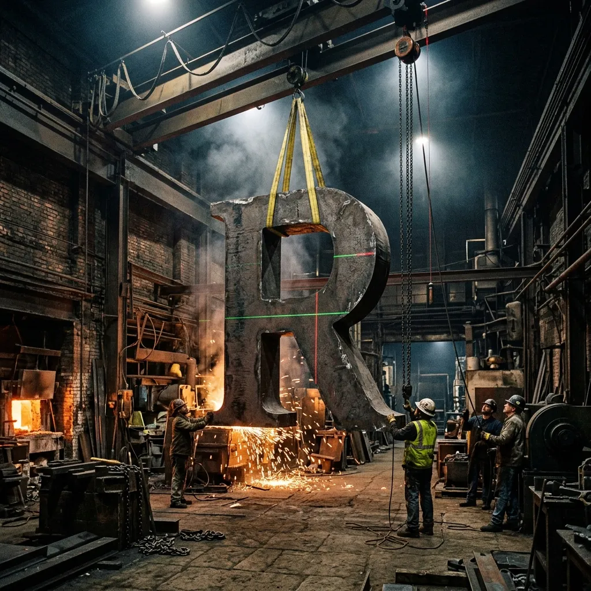
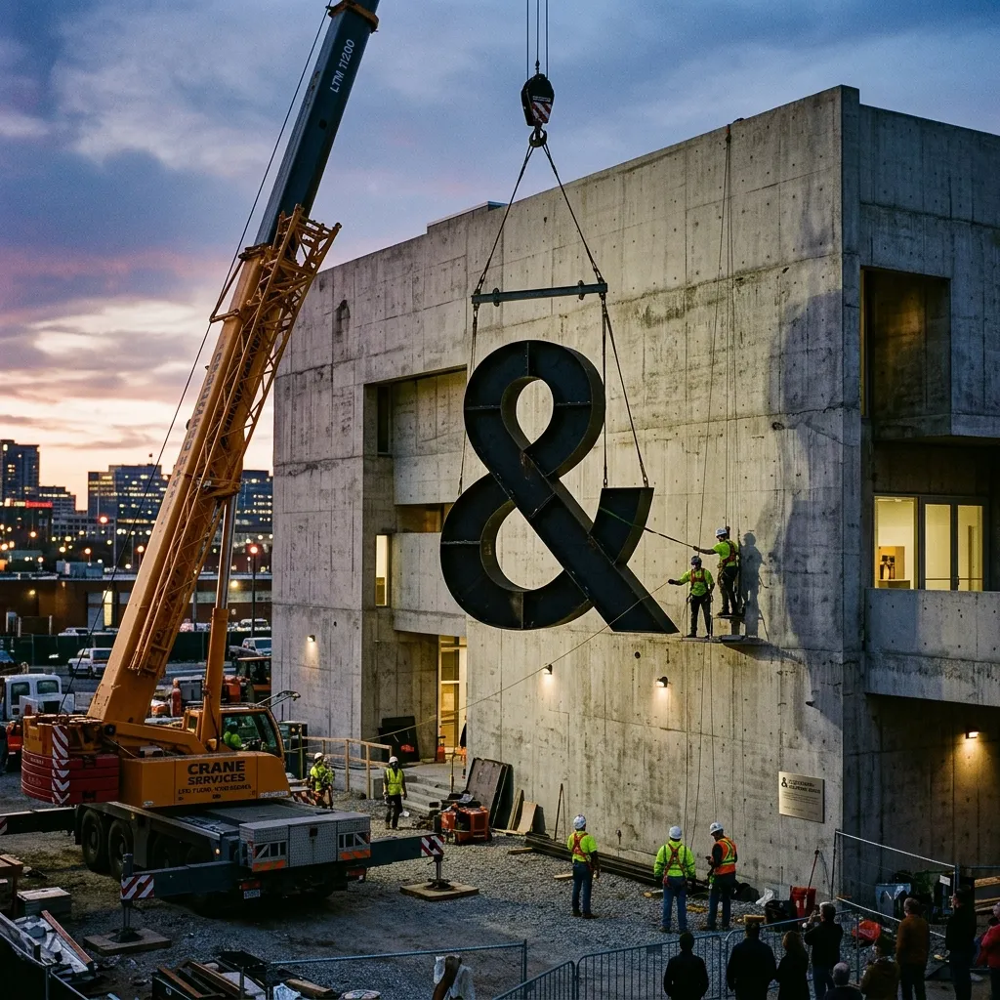
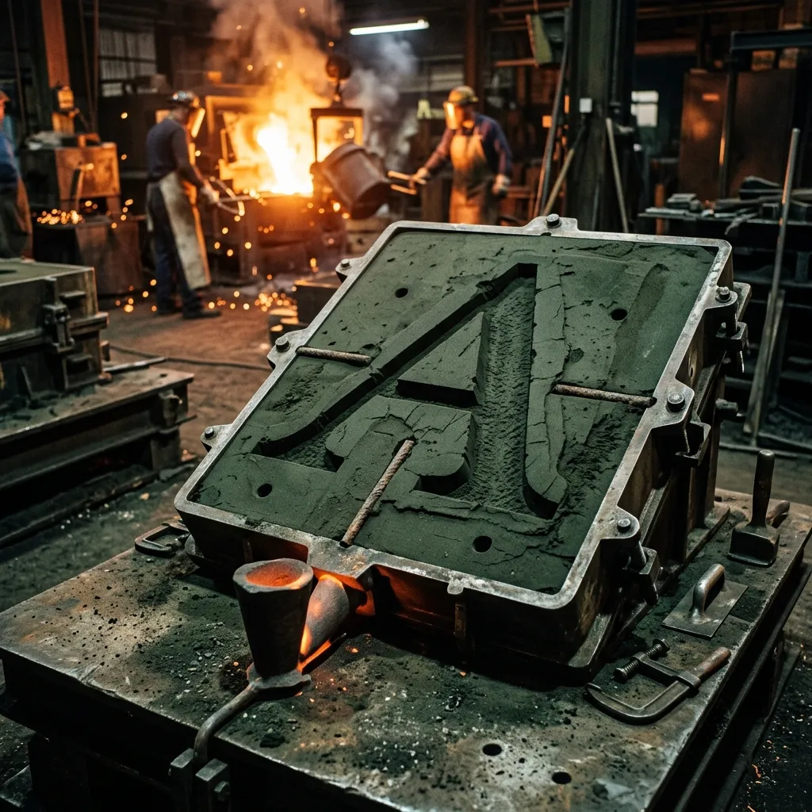

Stop Whispering on Glass Screens. Set Type with Mobile Cranes.
Designers have spent two decades squinting at six-inch glass rectangles arguing over half-pixel optical margins. We cast display type out of grey foundry iron and structural steel at cap heights exceeding four metres. Every glyph is delivered on a flatbed lorry and torqued into reinforced concrete with high-tensile anchor bolts.
System Log 01: The Optical Point-Size Delusion
In March 2022, our foundry crew took a standard twenty-four-point typography specimen sheet and ran the numbers against actual civic architecture: if you want a driver travelling at seventy miles per hour on the Darlington bypass to read a subversive four-line poem, a seventy-two-point display headline is visually equivalent to a dead moth on their windscreen. Modern graphic design has developed an acute fear of physical mass.
We reopened a railway boiler shop to restore physical consequence to the printed word. When we set a bold uppercase character, we do not export a vector path; we build a two-tonne sand mould, fire three hundred kilograms of molten iron, and crane-lift the cooling letterform onto an articulated trailer. A single comma cast in our foundry possesses enough shear resistance to anchor a suspension bridge.
If your statement cannot withstand an Atlantic gale or a pressure-washer, you are merely whispering into the digital void. We build letterforms that require structural engineering sign-offs, municipal crane permits, and counter-weighted rigging rigs to kern properly.
Typeface Foundry Matrix
Forget optical kerning pairs; our typography is calibrated by the metric tonne. We do not license software vectors. We pour structural grade S275 steel and BS EN 1561 grey cast iron into massive green-sand moulds. Every single typeface family we engineer is load-rated to survive a Class 3 hurricane whilst maintaining flawless structural legibility. The days of choosing a font based on its ‘friendly terminals’ are over. Choose your alloy based on its tensile yield strength.
Our heaviest brutalist sans.
Massive heavy slab brackets.
Chiseled wedge serifs.
Dense stencil cuts (low drag).

Crane Rigging & Structural Kerning Protocol
Typesetting at the scale of public architecture requires more than a steady hand and a mouse. It demands mechanical precision, heavy lifting equipment, and an obsessive approach to structural tracking. Our four-stage installation protocol ensures that when we bolt a two-tonne vowel to the side of a concrete library, it stays exactly where we put it, regardless of extreme weather or municipal complaints. This is kerning applied through sheer industrial force.
Before the flatbed lorry arrives, our technicians project a high-intensity laser grid directly onto the concrete facade. This establishes the baseline and x-height with millimeter precision. Optical margins are locked in.
The mobile crane operator attaches high-capacity yellow rigging slings strictly to the pre-calculated centre of balance on each glyph. A single slip here turns an uppercase 'A' into a devastating pendulum.
We do not rely on standard masonry screws. Each letterform is secured using M24 high-tensile steel studs sunk deep into the wall and bonded permanently with industrial chemical resin. Total shear resistance.
Once suspended in place, micro-hydraulic jacks are deployed to execute the final optical kerning. We adjust tracking by fractions of a degree before the chemical resin cures into immovable stone.
Dimensional Scale Benchmark
Graphic designers suffer from a catastrophic lack of scale awareness. When you design on a screen, the difference between a magazine layout and a billboard feels abstract. We have quantified this optical authority to prove that colossal physical mass commands undeniable attention. Compare standard print output to our structural iron castings, and ask yourself why anyone still bothers setting type they can hide behind their thumb.
Civic Dispatches & Verified Installations
Our work is not theoretical. We drop multi-tonne typography directly into the civic landscape, forcing public architecture to carry a message that cannot be ignored, deleted, or painted over by a nervous city council. We engineer provocative installations that permanently alter the visual hierarchy of the urban environment.
Local authorities requested a "subtle" plaque. We arrived with a flatbed lorry carrying eight tonnes of Mortar Slab. The resulting phrase is now permanently chemically-anchored to the raw concrete, legible from the opposite side of the city centre. The brutalist architecture finally has a voice to match its weight.
Deployed during a gale-force storm, our crew suspended a massive Ironclad Black stencil phrase down the sheer face of an abandoned grain silo on the Tyne. Thanks to the low wind drag coefficient of the stencil cuts, the installation held firm against severe shear loads while delivering a scathing municipal critique.
An unsanctioned overnight poetry run. We used three mobile telescopic cranes to drop a continuous string of Gantry Grotesk onto a major concrete flyover. By dawn, commuters were confronted by forty feet of structurally integrated typography. It was deemed too heavy and dangerous for the council to remove. It remains there today.
Foundry Engineering FAQ
A collection of structural queries for those attempting to understand the logistics of dropping cast iron onto public buildings.
A: We calculate the frontal surface area and specify Ironclad Black for extreme exposures. The stencil cuts act as aerodynamic relief vents, reducing wind shear by up to forty percent on exposed facades.
A: Yes, if you are a careless engineer. We integrate elastomeric bearing pads behind the chemical anchors, allowing the cast iron to expand by several millimetres without shattering the host concrete.
A: If we cannot fit a seventy-tonne mobile telescopic crane down the alley, we cannot lift the letterform. We demand a minimum clearance of eight metres and full road closure permits before pouring the mould.
A: Standard grey iron will rapidly oxidize into a brilliant, decaying orange. If you demand a pristine finish near the sea, we specify heavy-duty galvanised iron or architectural bronze, rendering the glyph utterly impervious to salt.
A: Absolutely. You cannot bolt two tonnes of steel to a cavity wall. We mandate a full structural survey of the substrate to ensure the building’s skeletal frame can tolerate the immense dead-weight load.
A: We advise presenting the installation as critical structural reinforcement or a load-bearing buttress rather than public art. Municipal committees rarely argue with chartered structural engineers citing public safety.

Direct Foundry Requisition Terminal
Bypass the graphic design agency fluff. Submit your parameters directly to Boiler Shed 4, North Road Works, Darlington, DL1 2PZ. Our dispatch desk operates via direct telex and secure terminal input. Specify your structural requirements, and our engineers will calculate the required tonnage.